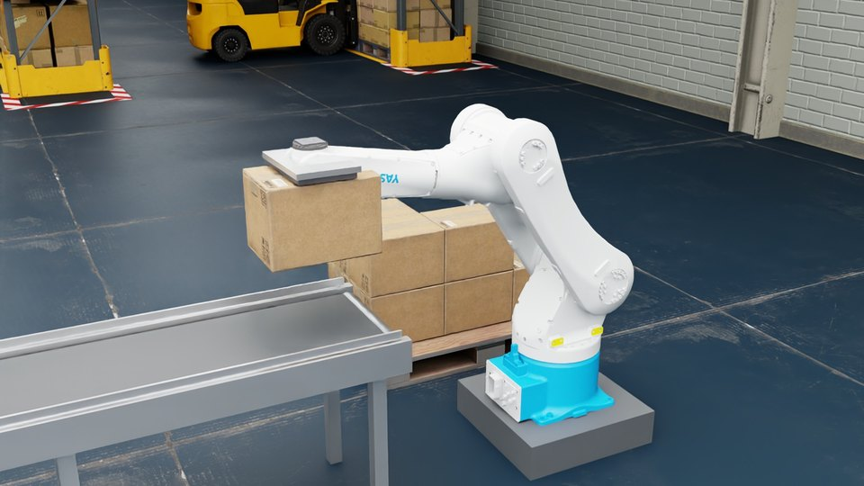
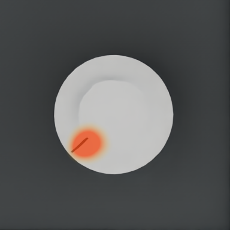
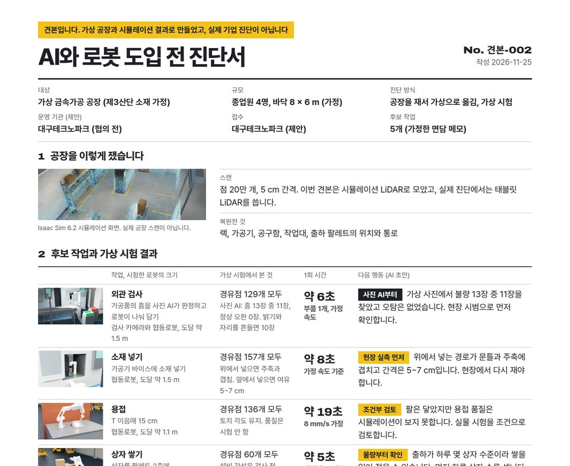
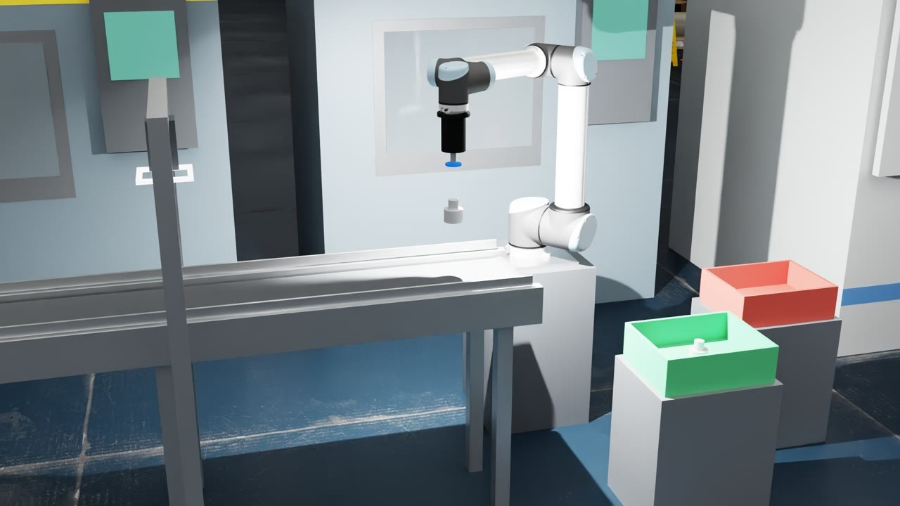
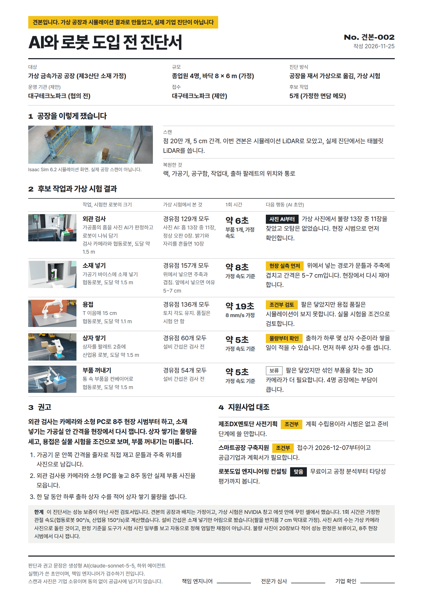

공장을 가상으로 옮기기
책임 엔지니어와 학생 두 명이 설비 자리를 재서 가상 공장을 만듭니다.

대구 제3산업단지의 제조업체는 한 곳에 평균 4.3명이 일합니다. AI를 쓰지 않는 중소기업의 80.7%는 필요 없다고 답했고, 청년 일경험 사업은 원칙적으로 10인 이상 기업이 대상입니다.
로봇은 사 주지 않습니다. 맞는지 가려 줍니다. 새 사업이 아니라 이미 있는 사업을 작은 공장까지 잇는 과정입니다.
책임 엔지니어와 학생 두 명이 설비 자리를 재서 가상 공장을 만듭니다.
학생이 로봇을 세워 보고, 생성형 AI가 진단 초안을 쓰고, 엔지니어가 검수합니다.

학생이 주 2회 공장을 오가며 그 공장의 부품 사진으로 검사 AI를 맞춥니다.

제조 DX 전문가가 결과를 심사하고, 사장님이 계속 쓰기, 정식 도입, 접기 가운데 하나를 정합니다.

바로 로봇을 사라고 할 곳은 한 곳도 없었습니다. 판정과 이유는 생성형 AI가 쓴 진단 초안을 그대로 옮겼고, 책임 엔지니어의 검수는 아직 받지 못했습니다.
직원 네 명. 소재를 넣고 빼는 일을 사장님이 직접 해서 가공기 앞을 떠나지 못합니다.
위에서 넣는 경로가 문틀과 주축에 겹치고 간격은 5~7 cm입니다. 현장에서 다시 재야 합니다.
긁힘과 찍힘을 사람 눈으로 고릅니다. 바쁜 날에는 놓치기 쉽고 보는 사람마다 기준이 다릅니다.
가상 사진에서 불량 13장 중 11장을 찾았고 오탐은 없었습니다. 현장 시범으로 먼저 확인합니다.
용접할 줄 아는 사람이 사장님과 한 명뿐입니다. 같은 모양 주문이 몰리면 납기를 맞추기 어렵습니다.
팔은 닿았지만 용접 품질은 시뮬레이션이 보지 못합니다. 실물 시험을 조건으로 검토합니다.
부품이 통에 쌓여 나옵니다. 다음 공정에 올리는 일에 한 사람이 하루 종일 붙어 있습니다.
팔은 닿았지만 섞인 부품을 찾는 3D 카메라가 더 필요합니다. 4명 공장에는 부담이 큽니다.
포장한 상자를 팔레트에 쌓는 일을 사장님이 직접 합니다.
출하가 하루 몇 상자 수준이라 쌓을 일이 적을 수 있습니다. 먼저 하루 상자 수를 셉니다.
매번 다른 금형을 한 벌씩 만듭니다.
면담만으로 내린 판단입니다. 반복이 없으면 로봇이 할 일이 적고 정상품 사진도 모이지 않습니다.
닿았지만 설비와의 여유가 15 cm보다 작을 때
검사 작업이고 가상 사진에서 흠을 정상보다 높게 매겼을 때
면담으로 보아 일이 적거나 알 수 없을 때
닿지 않거나, 장비가 더 필요해 이 규모 공장에 부담일 때
용접 품질처럼 가상으로 볼 수 없는 것이 성패를 가를 때
가상 검사 사진 13장으로 재 보니, 밝기와 놓는 자리를 조금 흔들자 놓친 흠이 2장에서 3장으로 늘었습니다. 그 조건의 사진으로 다시 학습하자 1장으로 줄었습니다. 기준을 현장에서 다시 잡는 일이 학생의 8주입니다.

정할 수 있는 것은 규칙이 정하고, 생성형 AI는 초안을 쓰고, 책임 엔지니어가 서명해야 효력이 생깁니다. AI에게 기대하는 판정을 알려 주지 않았는데 다섯 작업 모두 규칙대로 나왔습니다.
프로그램이 AI를 직접 부르는 경로는 실행하지 못해, 같은 입력을 별도의 AI(Claude)에게 주고 쓰게 했습니다. 견본은 가상 공장과 가정한 면담 메모로 만들었고 실제 기업 진단이 아닙니다.

기존 정책에 없는 기술을 주는 제안이 아닙니다. 가상으로 먼저 따지는 발상, 팀이 8주 동안 기업 과제를 푸는 형식, 도입 전 기획 컨설팅은 이미 있습니다. 새로운 것은 그것을 직원 네댓 명 공장에서 한데 묶는 대상과 조합입니다.
가상 시험에는 Fanuc CRX-10iA/L, Neuromeka OPTi3, Universal Robots UR10, Yaskawa NEX20을 썼습니다. 아래 네 곳은 로봇 검토로 나온 공장이 살펴볼 수 있는 곳이며 제휴나 추천이 아닙니다. 상표는 각 회사의 것입니다.
대학생 팀의 정책 제안입니다. 대구시나 대구테크노파크의 공식 사업이 아니며, 이 페이지에 적힌 기관과 협의한 내용이 아닙니다.
3공단 사장님에게 직접 들은 말이 없습니다.
어느 기관과도 협의하지 못했습니다.
기존 사업이 직원 네댓 명 공장에 정말 닿지 않는지는 "찾지 못했다"는 수준입니다.
영상과 시연은 모두 가상 공장입니다. 3공단 제품으로는 돌려 보지 않았습니다.
공장 20곳, 학생 40명, 한 해 약 2억 2,800만 원은 가정입니다.